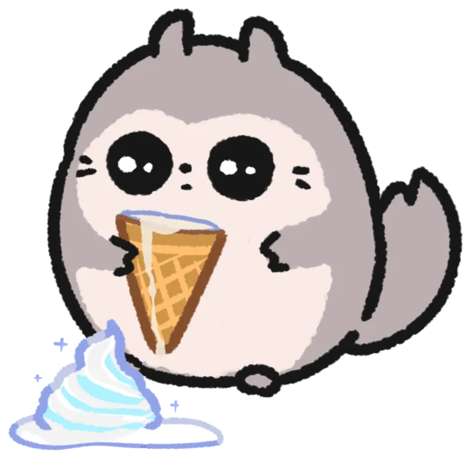
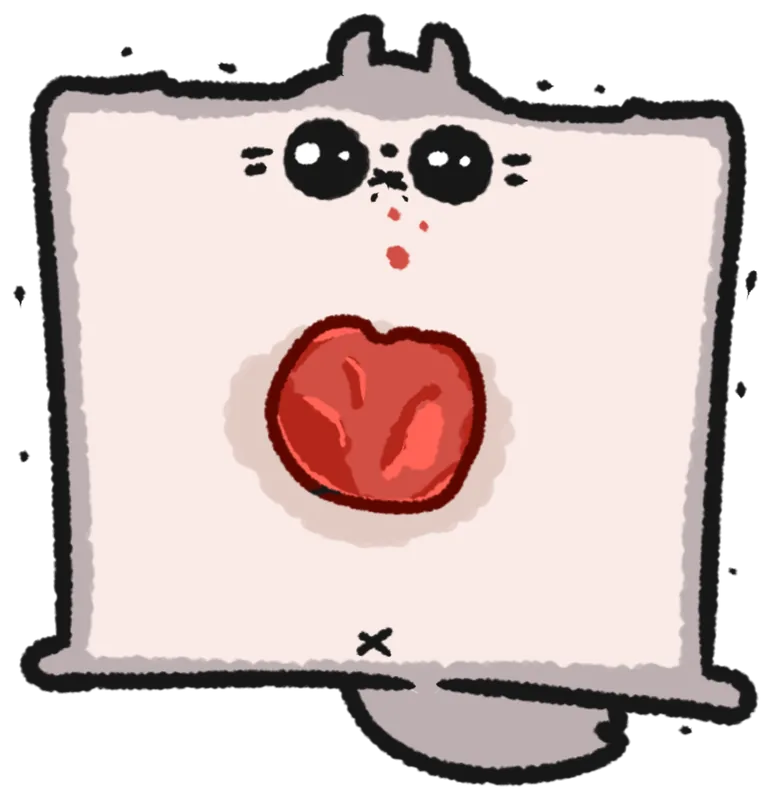
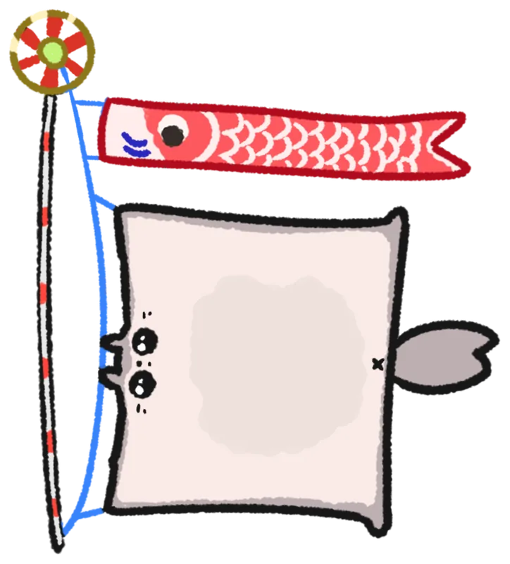
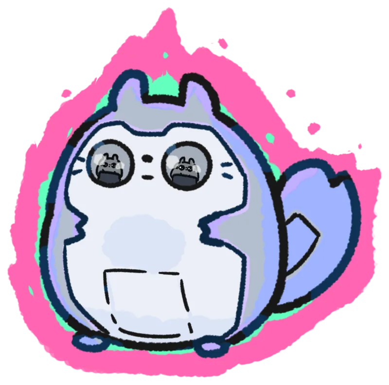
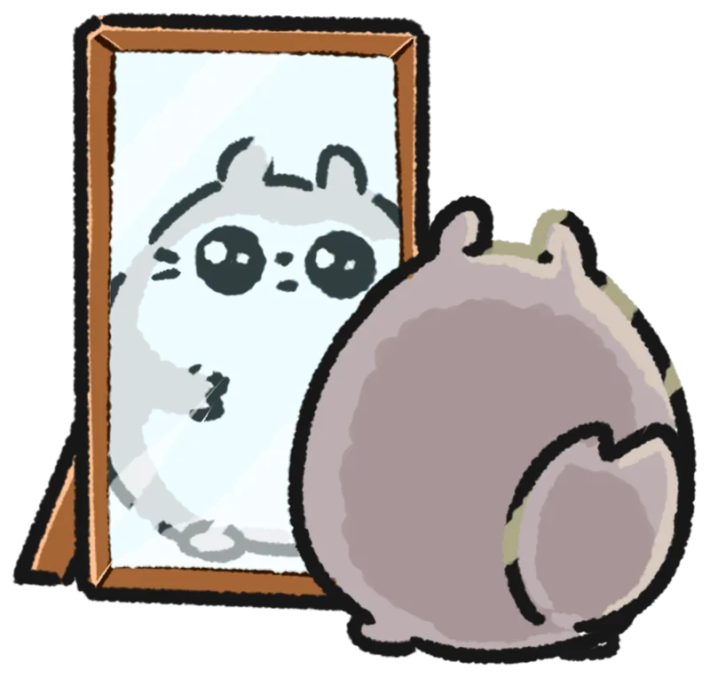

まるくて、のびーる。ぽちゃっとモモンガ。
POCHAMON OFFICIAL SITE


👆 ぽちゃもんを タップしてみてね！
まるくて、のびーる。ぽちゃっとモモンガ。
POCHAMON OFFICIAL SITE
👆 ぽちゃもんを タップしてみてね！
ぽちゃもんのさいしんじょうほう。
がんばらない日も、ちゃんとかわいい。

ぽちゃっとまるいモモンガ、ぽちゃもん。
飛びたい気持ちはあるけど、
きょうも食べて、のびて、ねむい。
ステッカーになったぽちゃもんたち。タップでよってみてね。
さわると かたむく。ながおしで カードのなかへ。
ぽちゃもんを つれてかえろう。




グッズは デザフェス・コミティアの ブースで はんばいしてるよ🐾
つぎの しゅってんは COMITIA157（8/23・西4ホール し08a）。おしながきは「おしらせ」を みてね。
むりょうの かべがみ、じゅんびちゅう。